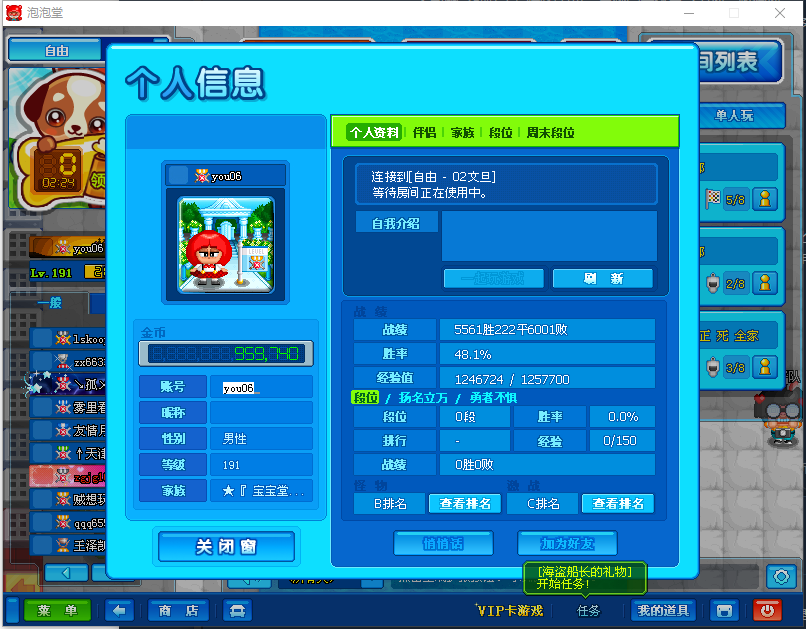

因为从去年年底开始到现在都忙的手忙脚乱，这篇回忆录已经拖了快一个月了，但 2020 还是对自己影响很大的一年，很幸运的认清楚了自己未来要的是什么，故提笔。
这篇文章 delay 很大原因是参加了 Hackathon。九月中，我转到事务组一段时间后，VLDB 2020 召开了，mentor 把 Proceedings 上一篇讲确定性事务的论文丢给了我。我在对 2pc 理解还不够深刻、对 TiDB 分布式事务实现还不够了解、没听过什么是确定性数据库的情况下囫囵吞枣的读了这篇论文，也成了我了解确定性数据库的入口（对，我事前居然没了解过 Calvin！）。时间推进到十二月初，在学校和导师沟通的过程中发现我原本在研究的基于依赖关系事务模型的测试方法并不能被非数据库方向的答辩评委所认同，于是我想起了这篇文章，恰巧今年的 TiDB Hackathon 进行的比较晚，就打算拿这个 idea 来参赛。好在我的队友和导师非常的厉害，我像海沃德一样提出天真的想法，他们像维克斯一样指出其中的问题，并加以修正。最后这辆确定性事务的车开起来了，一个新的事务模型，影响大到没人敢想象合并到代码库里面去的样子。和论文不同的是，我们的实现需要考虑和现有架构的融合，是一个痛苦且有趣的过程！越是想破脑袋搜刮方案，渴望找出新的解决方式，就越是觉得 2pc 固若金汤、无懈可击，最后是在 Calvin 上找到了 checkpoint 的思路，虽然不知道靠不靠谱，先做一把实验再说。
印象中每次参加 Hackathon 都会肝到四五点，怀疑人生，这次即使是在有了完整的规划的情况下，还是因为改事务影响的东西太多而爆炸肝。为了跑起来 tpcc，修到半夜，最后又在调优上花费了大量的时间。作为比赛的反思是不应该死磕 tpcc 的，他虽然很重要，但太难了！
印象最深刻的项目是赛前在推上看到 spdk 的结果 1.8-10x qps，感到相当震惊，我以为这和 utp 一样简直是对其他提升性能工作的降维打击，并且其作者有相当丰富的 kernel 开发经验。IMO, that’s what true hackers do.
但这终究是比赛，而非学术会议，good idea, implementation, story 缺一不可，我们组的确定性事务和 spdk 一样走了学术派路线。嘛，反正自己玩开心了 lol。
前些日子和同学一起看了“心灵奇旅”，我个人非常喜欢这个电影的风格，主流的西方文学、影视作品都倾向于写实风格，比如复仇者联盟，通过具像的画面和特效来传达感情。但我更喜欢刘易斯的那种《爱丽丝梦游仙境》的作品，我们在艺术创作中为什么要遵循逻辑呢？我们总是假设自己能了解到真实的东西，而真正的真实是基于所见之物的推理，前者是可以突破的，而后者不行。
我喜欢这部作品的另一个原因来自与我所崇拜的创作者SCA自所写的剧本。
为什么大人喜欢喝酒呢？
大人になると悲しいことに、酒を呑まなくては酔へないからである。
大人是非常令人悲伤的，不喝酒就无法进入「醉」的状态。
子供なら、何も呑まなくても、忽ち遊びに酔つてしまふことができるのだから……。
但是小孩子啊，什么都不需要，只是在玩耍的过程中，就能进入「醉」的状态了...
电影在这一点上刻画的很好，22 从刚来到世界的迷茫，变化成好奇，任何事情对于 22 来说都是有趣新鲜的，看到汽车觉得“那么大的东西居然会动”，吃批萨会发现“原来有这么好吃的东西”。而很多大人，甚至会拿“不就是汽车”、“不就是批萨”来鄙视他人，这是何等的恶劣和悲伤。
我对这部电影喜欢的地方也正是我觉得他所刻画不够的地方，简而言之是对 22 在地球的心路历程的变化不够，以及 Joe 的表现未能体现出这一点反差，童年的美在于未知和无限的新奇。我不喜欢在欣赏一部作品的时候从电影制作的视角去看他，这里所说的仅仅是我作为一位观众的意见。
今年做的一个很重要的决定是 dive into database，我对 CS 的学习过程是自顶向下的一条扭曲的路线，不停的否定自己的认知。和我的天才同事们不同，我没有打过 OI/ACM，在代码能力的起点上有着很大的差距，入门是从前端开发学起的，相比于如何写代码，我更懂如何做产品。相比之下，我比较随遇而安，在来 p 社实习之前，从来没有把数据库开发作为自己的职业选项之一，对数据库没有特殊的兴趣，但是我确实觉得研究数据库的过程非常有趣。在校招的季节，1、我面临两个选择，刷题面试光撒网，2、dive into database。我确信，以我的智商做不到在收获一堆令人羡慕的 offer 的同时还能学好数据库事务，那个时候家里人和我说「你最重要的事情是面试」，但我还是选择了后者。
老实的说，我是一个不擅长表现自己的人，当面试官问我“介绍一下数据库隔离级别的时候”，但凡我对通过读写关系对事务进行描述有一点不了解的时候，我都会老老实实的搬出教科书上古老的“脏读-序列化”的定义；而对于我很清楚的东西，又会略过细节，去讲述最核心的东西。这也直接导致了我参加的为数不多的面试都迅速结束，说到底还是学艺不精（笑。
面试是为了得到一个理想的岗位，而我现在又正在一个理想的岗位上实习，本着活在当下的想法，在那个所有同学都在刷题面试的时候，我开始 dive into database。半年后的今天，我也不能说我在数据库领域上有了多高明的见解，总结下来有几点小成就：比起去年 hackathon，能听懂的项目变多了不少；看 issue 能找到一个 bug 出在哪里了；看山不是山了。
因为某位卷王的原因，「失败」成为了我社交圈里的高频词汇，认真的说我没感觉自己有多「失败」，也没有多「成功」，今年还是在一个「差不多」的状态中过去了，能力不足的原因，想做的事情都没有做的很成功，但拥有了不少「失败」的经验。幸运的是，我至今所打过交道的同事都无比的善良，也给予了我数不清的帮助，让一个没怎么做过系统编程的小白入门了数据库开发，我不觉得适应大厂职场那一套是什么了不起的事情。
前文提到了我懂得如何做产品，在我看来做产品重要的是「侍奉之心」，渴望把最好的东西给使用者，听到使用者的意见，这其中必然会做许多 dirty 的工作。我没有什么大型产品的打造经验，我说的纯属是做 bot 过程中的一些心得，做出来的东西有人喜欢是一件很令人开心的事，由于 p 社的程序员大多有类似代码洁癖的强迫症，所以他们对工具的要求真的很高！以自动 merge 代码的功能为例，要做到几个要求：同 branch 串行，不同 branch 并行；当需要时自动 update branch；随时暂停。
在参与数据库开发之后，我发现所谓「侍奉之心」是根本不够用，很多时候也不顶用的，要做好数据库内核，唯有走火入魔的痴迷其中与配当天才的智商。对我的能力来说，这是一条困难的路，也是一条需要抛弃许多东西才能够走的动的路。
暑假时候入坑了 ff14，但是因为性格原因，对于团队配合的游戏难以上手，时刻担心自己的失误会给队友造成困扰，我认为自己游戏水平至少不低，愿意重复挑战高难度的关卡，比如在玩 mhw 的时候，我是在单人摸清楚贝西摩斯的机制之后才和同学一起挑战的，之后 solo clear 了这只建议团队攻略的怪物。ff14 是相当出色的 MMORPG，并没有因为我不喜欢团队游戏就损失所有的游戏乐趣，其中的元素众多，融合的方式之好甚至想让我去补历作的 ff。
比起下半年的清晰，上半年的经历可能比较迷茫，虽然国内的疫情控制良好，但口罩和严格的管制政策使城市生活更加的压抑与孤独。在工作中无法找准自己的定位，看到身边同事的优秀感觉遥不可及，感到焦虑和疲惫，至此完全抛弃了在学校里觉得自己什么事情都能做、能做好的那些盲目。感谢某位同事和我说的“做数据库其实没那么难，会写代码就行了”，虽然我不认为我的天才同事们仅仅是「会写代码」而已，但我好像也能「会写代码」，事情是从那时候开始变得清晰的。
暑假的时候，有位学长给我介绍过选调生，当下不是没有心动过，不加班，没有 KPI/OKR，可以享受生活，我 100% 理解为什么那么多人想当公务员——躺在高速发展的列车上享受人生。当然我远没有那位学长那么优秀，甚至没有选调生的报名资格（笑），在之前的研究生阶段就没有考虑过自己还有这条路可以选择。而另一点，想到了当时司法考试的失败，当年没有影响到考研是我的幸运，我考研成功了，但是如今如果再把心思分散到考公上面去，那就不一定有这种幸运了。自然的、理想主义的想法，公务员并非什么高人一等的岗位，也并非除了这一条路我就无法实现自我，倒不如说，在体制内实现自我对我来说更加困难吧。这是这份心动马上就消散的原因。
我不怎么清高，也不是不知道显示的高低优劣，只是觉得如果所有人都变成哪里钱多哪里能工作轻松就往哪里扎堆，那这样的世界未免太过枯燥。我们所生活的城市，已经接近于艺术的不毛之地，这一行为是在加剧这种现象而已，哪怕有了十分轻松的工作，上班下班十年如一日，这能算「生活」吗？大部分人认为考公就是脱离苦海的现象挺奇怪的。
最后，给看到这里的你揭晓一个答案，我的网名是 you06，来源于我接触的第一个网络游戏。

年初开完年会回到家之后，疫情就开始了，当很多同学赋闲并享受了可能是成年以后最长的一个假期的同时我在家经历了 remote 工作的一段时间。这一年过的比我想象中要快，我的忙碌也算不得什么真正的忙碌，感谢帮助和关心过我的人，祝你们能完成自己的心愿。